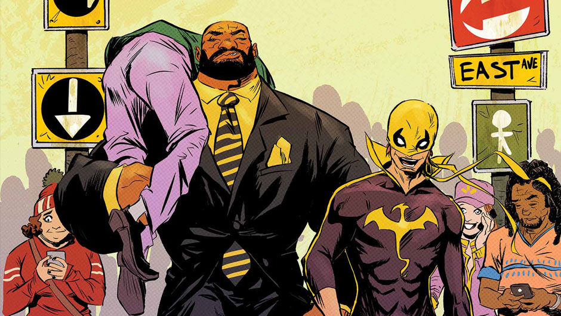

Photojournalist (Public Affairs Specialist) U.S. Marine Corps, HQMC Henderson Hall, Arlington, VA, Oct./2013 – Dec./ 2016 Preparing, editing and distributing public affairs program material, planning, creating and executing visual information projects primarily in the form of printed and online publications, visual presentations, and exhibits. Determined best medium and message content to reach target audiences. Designed and coordinated multimedia programs on topics of timely concern to management. Applied communication theory and techniques to public affairs activities for more effective resource use. Provided means for two-way communication flow within the total communication environment.
